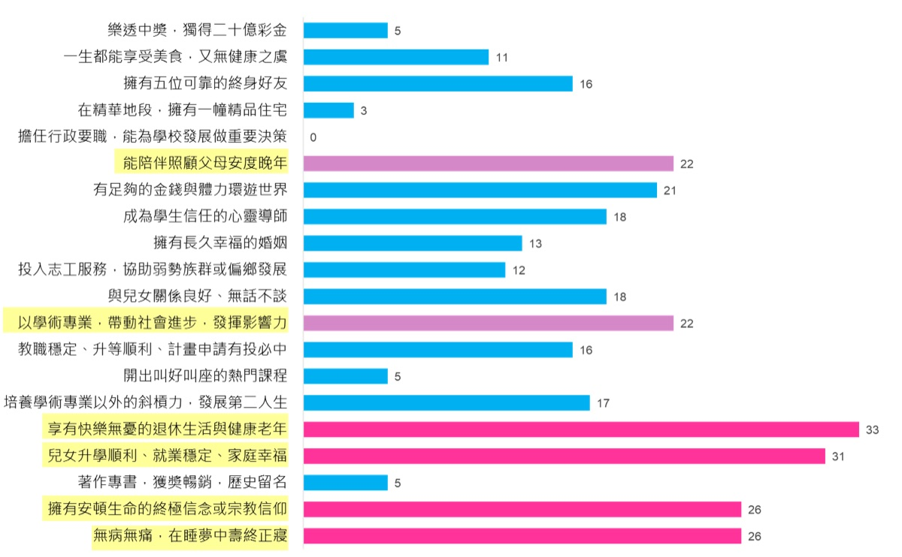
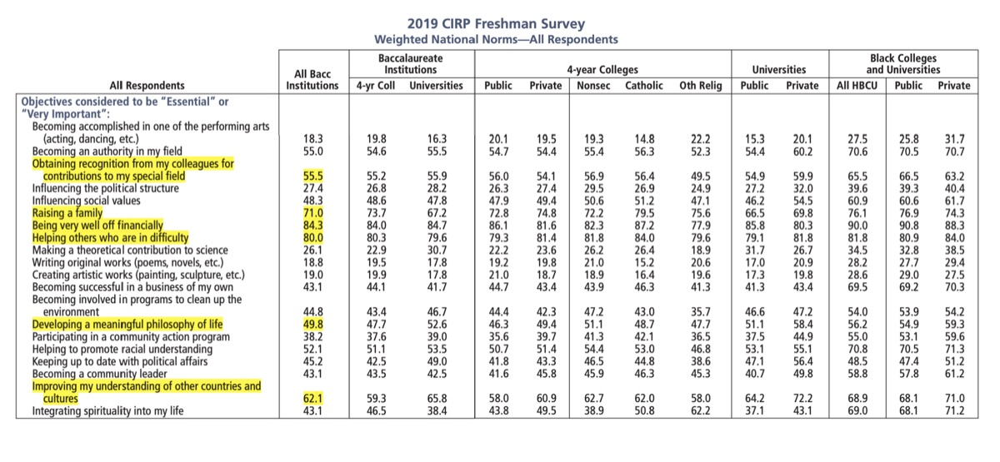
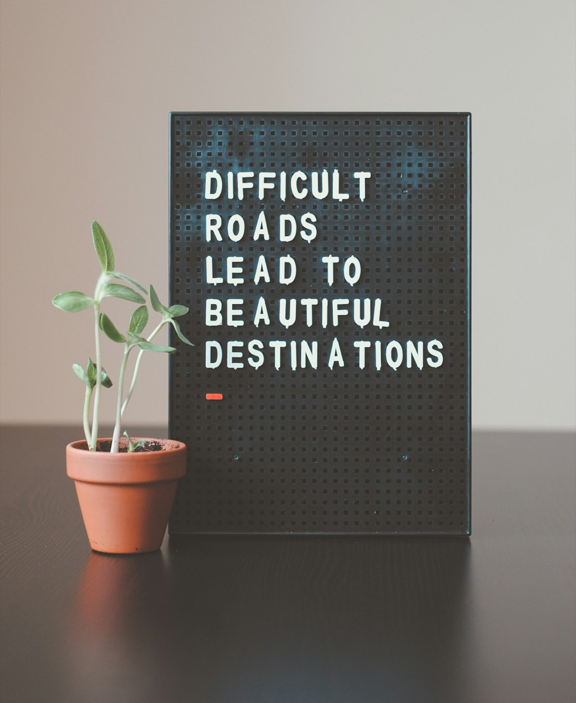

單元二 · 人生第一問
終極關懷
什麼是值得活、且有意義的人生？
進入全螢幕．開始上課
孫效智 | 臺大生命教育研發育成中心 第十期師資培育學分班 | 台北班 Day 2
跳到最後一頁
今天的地圖：六節課，一條路
上午問「什麼是值得活 的人生」，下午問「人生本身有沒有意義 」——一條從終極理想走向終極信念的路。
第 1 節 序曲《一路玩到掛》× 為何終極關懷如此重要（09:10–10:00）第 2 節 「終極關懷」關懷什麼（10:10–11:00）第 3 節 什麼是值得活的人生（11:10–12:00）── 上午 meaning in life ｜ 下午 meaning of life ──
第 4 節 死亡是牆還是門（13:00–13:50）第 5 節 生命意義的探索（14:00–14:50）第 6 節 總結（15:00–15:50）
今天，我們會走過這七站
一條從「人為何而活」走向「人生無常，唯愛永恆」的路。
壹 序曲：一路玩到掛 ——用一部電影，叩問「門」與「牆」貳 為何終極關懷如此重要 ——人生風暴與終極願景參 「終極關懷」關懷什麼 ——從人們對美好人生的想像說起肆 究竟什麼是終極關懷 ——四層次反思與人生第一問伍 什麼是值得活的人生 ——值得活的四大面向陸 生命意義的探索 ——死亡，是牆，還是門？柒 總結 ——人生無常，唯愛永恆
壹
序曲：一路玩到掛
這份《一路玩到掛》觀後心得，你已在課前完成並繳交。今天，先在小組裡互相聽見彼此最被觸動的那一點。
卡特遺書與愛德華悼詞
「當我長眠在有著一扇門的一堵牆外面時，
電影《一路玩到掛 The Bucket List》（2007）。這組「門」與「牆」的意象，正是今天要陪大家一路問到底的母題——它最後會以什麼方式收束，留到下課前揭曉。
這部電影，直面了死亡與虛無這兩道人生最難的課題。
掃你那一組的 QR，把全組精華打上來
請各組派一位同學 ，掃描你們那一組的碼，全組最有啟發的一點 」（一句話＋為什麼），投影幕即時更新。
分組：第1–4組依靈修小組（每組至多 10 人），人數超出者併入第5組綜合組 。
貳
為何終極關懷如此重要
人需要一個能撐過風暴的人生願景——這正是終極關懷如此重要的原因。
健康無價！
大病後，人常驚覺「健康無價」。
但，健康一定能維持嗎？生老病死可以避免嗎？
以健康長壽為終極目標的人生，就圓滿了嗎？
耶魯大學的人生思辨課與 Angela Williams Gorrell
Angela Williams Gorrell 與《Life Worth Living》三位作者
Angela Williams Gorrell 到耶魯大學從事喜樂神學 的研究，並與《Life Worth Living》三位作者一起教授「值得活的人生 」這門課。
然而就在那段期間，她接連在四個星期內失去三位親人 ——使得「研究喜樂、卻同時與苦難共處、並度過苦難」，成為她當時最切身的功課。
Gorrell 的「人行道時刻」
我打開車子的右前門，從腳墊上撿起我的手機。達斯汀自殺了。 」……不要！ 」，一邊哭，一邊要她告訴我，那不是真的……我的手機滑落在教會停車場的人行道上——我開始號啕大哭。
—— Angela Williams Gorrell《喜樂的萬有引力 The Gravity of Joy》（引自《耶魯大學的人生思辨課》p.234）
人生風暴與終極願景
在最後一堂課，安琪拉說完故事後看著所有學生，教室陷入肅穆的沉默。她深吸了一口氣，對他們說：
「我希望你們能有一種人生願景 ，能夠支持你撐過那個人行道時刻 。將來可能會有那麼一天，世界停止轉動了，你的心碎了。那時，你需要一個值得你用此生追求的人生願景，幫助你度過那個人生風暴。當然，你的願景會因為那些人行道時刻變得更有深度、得到轉化、變得更清晰；但我希望你現在的願景，已經有可以為你指引方向的羅盤 ，或是可以使你穩穩定住的船錨 。」
那天，所有人離開教室時都覺得：我們的繁盛人生願景，受到了人生中「人行道時刻」的考驗，變得更精煉了。要挺過人生的風暴，你需要的不只是對「值得活的人生」有扎實的概念——但如同安琪拉所說的，如果你的船上現在已經有了船錨，總是比較好。
——《耶魯大學的人生思辨課》p.234–235
參
「終極關懷」關懷什麼？
先從人們對「美好人生」的素樸想像說起——再一起追問：這些，是終極關懷嗎？
臺大學生的夢想清單 以 2024 臺大新生講座為例
人生意義與關係
找到人生意義與目的、結交知心好友、與家人感情融洽
學業與職涯
國外交換、起薪百萬
臺大教師的夢想清單 與學生同一份問卷·教師版

安頓生命 擁有安頓生命的終極信念或宗教信仰
家庭 兒女升學就業順利、家庭幸福、陪伴照顧父母安度晚年
健康善終 健康快樂的退休與老年、無病無痛在睡夢中壽終正寢
美國新鮮人的夢想清單 2019 CIRP Freshman Survey
有錢 84.3%
幫助困難中的人 80%
成立家庭 71%
瞭解其他國家與文化 62.1%
專業上獲得肯定 55.5%
發展自己的人生哲學 49.8%

臺大學生 vs 美國大一新生：同與異
相同之處
都重視家庭與成家 、真摯的友誼
都有不少人把「人生的意義」 列為重要
都關心幫助他人、利他
不同之處
臺大學生把「找到人生的意義、目的、價值」 放在第一（票數遙遙領先）
美國新生則以「經濟富足」 名列前茅，物質取向相對明顯
人生夢想清單：臺大學生 vs 臺大教師
學生版
找到人生的意義、目的、價值
結交五位終身的知心好友
畢業後能進入起薪百萬的跨國企業工作
成功申請交換學生，至國外留學生活一年
與家人感情融洽，無話不談
遇到天菜，與他／她有一段穩定的感情發展
教師版
享有健康快樂無憂的退休生活與健康老年
兒女升學順利、就業穩定、家庭幸福
無病無痛，在睡夢中壽終正寢
擁有安頓生命的宗教信仰或終極信念 能夠陪伴照顧父母安度晚年
結交五位終身可靠的好朋友
一般人對美好人生的想像（一）：四面佛
四面佛所祈求的，正是一般人心中的「美好人生」：
事業 ：學業、事業、官位、名望感情 ：愛情、婚姻、家庭、人緣財富 ：正財、橫財、偏財、財運健康 ：平安、治病、親友健康
一般人對美好人生的想像（二）：健康・快樂・長壽・財富自由
這四項，是現代人很普遍的人生理想。
一般人對美好人生的想像（三）：人生座右銘

「Difficult roads lead to beautiful destinations.」
有志者，事竟成
知識就是力量
一日之計在於晨
要怎麼收穫，就要先怎麼栽
天下無難事，只怕有心人
失敗為成功之母
一分耕耘，一分收穫
天道酬勤
這些想像，是「終極關懷」嗎？
先別急著答——用四個問題，量一量我們與「終極關懷」的距離。
❶ 我們投入時間、心力去做的各種事，真的讓我們更趨近夢想與目標 嗎？
❷ 這些夢想或目標，是階段性 的，還是從整體人生來看值得追求 的？
這些想像，是「終極關懷」嗎？（續）
❸ 我們追求的一切，經得起無常與死亡的考驗 嗎？
❹ 我們現在的一切努力與追求，能答覆「生命意義」的問題 嗎？
我們渴望的很多——但其中哪一個，真的撐得起整個人生？
肆
究竟什麼是終極關懷？
從「我想要什麼」，提升到「什麼才值得追求」——這是人生第一問的轉身。
反思，讓人從盲從變得清明
「未經反思的人生，是不值得活的人生。」—— 蘇格拉底
「吾日三省吾身。」—— 曾子《論語·學而》
素樸的渴望若不經反思，人就只是隨主流而活。反思，是讓我們有能力去問：在這麼多想要的東西之中，什麼才真正值得追求？
接下來這張「思維四層次」的圖，就是用來幫我們定位：自己此刻的提問，落在哪一層。
核心鷹架：思維／反思的四層次
這是把「終極關懷」定位在人生三問中的主圖——意識愈往上，愈接近「自我超越」。
層次 意識狀態 它在問什麼 對應人生問題
不假思索 出於習慣 照平常那樣做就好 — 工具理性層 追求效能 我做的事，能幫我得到想要的嗎？ 人生第二問（怎樣活·價值思辨） 目的理性層 自我覺察 我到底要什麼？階段目標符合整體想像嗎？ — 終極關懷層 自我超越 什麼才真正值得追求？什麼是至善的人生？ 人生第一問（為何活） 靈性修養層 知行合一 我知道卻做不到，如何活出？ 人生第三問（如何活）→ Day 4
人生第一問：人（我）應為何而活？
把問題從實然 （我想要什麼）提升到應然 （什麼才值得追求）。
「很多人終其一生沿著梯子向上爬，梯子靠錯了牆。 」
爬得再快、再高，方向錯了，也只是離真正值得的人生愈來愈遠。
至善與終極關懷的兩層面
古今東西方，都指向同一個詞——人生所能達到的最圓滿幸福。
同一個概念，四種說法
《大學》：止於至善
希臘：eudaimonia （繁盛）
拉丁／士林哲學：bonum summum
當代：flourishing
Life worth living ＝ a life of flourishing ＝ a life of eudaimonia。
由此引出兩層面
(1) 什麼是值得活 的人生？（終極理想）
(2) 人生是否有意義 ？（終極信念）
伏筆：人生無常，唯愛永恆？
補充：人生意義，真能那麼主觀嗎？
王榮麟反問：如果人生意義純屬主觀，那為什麼——
快樂 ≠ 幸福 不懂分享、沒有親密關係的人，擁有再多也不幸福
「施比受更有福 」幾乎跨越所有文化
幸福，似乎有某種客觀的、人性共通的標準 。
這正呼應四層次的「自我超越」，也通向下一段「值得活的人生」第二面向——非自我中心的愛。
王榮麟 2020〈終極關懷〉教學大綱。
伍
什麼是值得活的人生？
先誠實肯定主流價值，再看見它們的限度——然後，認出四個真正撐得起人生的面向。
主流價值：人性的渴望，與它的限度
健康與長壽 ：不健康即痛苦、甚至預告死亡，人人趨避；但「長壽而不健康」，不易是值得活的人生。
財富自由 ：王爾德反諷「年輕以為錢最重要，老了才知確實如此」；Sandel《What Money Can't Buy》——市場不該侵入不屬於金錢的領域。
快樂 ：趨樂避苦是最自然的渴望（耶魯人生思辨課 p.205「壁爐炭火」）；但若過得快樂卻沒有意義呢？
這些都是人性自然的渴望，誠實肯定，不先否定——重點是看見它們各自的限度。
宗教文化的評價，及其限度
佛教 ：文珠法師、印順、星雲「財富是弘法資糧」；「離苦得樂」之樂，是清淨究竟之樂，含願眾生離苦的慈悲——「苦難是化了妝的祝福」。基督 ：耶穌醫治神蹟肯定健康；但長壽非終極——耶穌 33 歲橫死，殉道史代代相承。儒家 ：論語、孟子論富貴；孟子捨生取義、孔子飯疏食、顏回不改其樂；韓劇《我的大叔》「過得好的人比較容易成為好人」。
基督的醫治神蹟與殉道、佛教的離苦得樂與良寬禪師——宗教既肯定健康財富快樂的正面意義，也以生命見證它們不是終極。
值得活的人生：四大面向
這是上半場的脊椎。其中第 ③④ 面向，正是通往下午的橋——下午不是換題，而是深化。
1
自我超越 在可能範圍內，自我覺察、自我實現，並進一步自我超越 （呼應四層次最高層）。
2
非自我中心的愛 不把「我」無限膨脹；核心是美好關係、付出、慈悲與愛。True Love ≠ Fish Love ——「愛賦予意義，愛就是天堂」。
3
經得起無常與死亡 忽略「人生會以死亡終結」的願景，就不算完整。觸及了死亡之限與終極意義嗎？
4
能答覆人生意義 means to live ≠ meaning to live for
面向二：True Love，不是 Fish Love
「你愛魚，所以你把魚抓起來吃掉了——這不是愛魚，這是愛你自己。」
真正的愛，是為了對方的好而付出，不是把對方當成滿足自己的手段。愛賦予意義，愛就是天堂。
影片：True Love ≠ Fish Love（值得活四大面向·面向二）。
體驗活動：人生畢業禮
書寫＋互讀
想像自己 90 歲安詳離世——希望最親近的人，怎麼描述你是什麼樣的人？你最希望被記得的三件事 是什麼？
4 人一組互讀（只讀「希望被記得的三件事」）。然後以終為始反推：既然希望被這樣記得，現在的人生該怎麼走？
你會發現——被記得的幾乎都是愛與關係 ，而不是財富與享樂。
這正對應四大面向 ①②，也印證了：幸福，確實有客觀的人性共通標準。
陸
生命意義的探索
上午問「值得活」，下午問「有意義」——meaning in life 走向 meaning of life。
先讓學員討論：生命意義問題
承接四大面向 ③④，靈修小組討論一題——
「生命『中』的意義」 （我覺得活著值得、有連結感）「生命『本身』的意義」 （宇宙／人生整體究竟有沒有意義），你覺得後者這個問題，問得通嗎？ 小組討論約 10 分鐘 → 各組一句話回饋。先不評論，讓張力浮現——這正是下午「兩種意義之辯」的入口。
死，對你而言比較像牆，還是門？
把抽象的意義問題，落到最切身的提問。先每人投一票 ，理由留到小組討論。
手機開 …/ask.html?p=vote · 已投 0
各組掃 QR，上傳「組立場＋一句理由」
每組討論彙整一句組立場 （牆／門／說不清，加上為什麼），
門／牆思辨：理性沉默，但能洞察意義
左半實牆盡頭幽暗、右半微啟之門透暖光——同一道界限，兩種理解。
死，是一扇門，還是一堵牆？
哲學面對門／牆，只能保持沉默 ——理性無法透視何者為真。但理性能洞察各選項的意義 ：
若是牆 ，人生再精采，結局就是去撞牆（＝卡繆的荒謬）；門 ，則自我的超越性、對真善美聖的嚮往、對永恆的盼望，都得到合理而融貫的理解。
孫教授演講提出，以〈未知死，焉知生〉（《科學人》2010/10）深化。
〈未知死，焉知生〉：門／牆四支線
① 以愛超越死亡 死亡最猙獰處，是奪走整個存在與意義；唯有在愛裡能撫平或超越——捨生取義、文天祥、林覺民〈與妻訣別書〉、耶穌。「人生無常，唯愛永恆。」
② 一廂情願，還是合理盼望？ 心靈消逝主義類比費爾巴哈「心理投射論」。孫教授反駁：渴望永恆不能證明 死後世界存在，但也不能反證它只是妄想 ；若無死後世界，一切意義、真善美聖、愛、文化文明都成「虛中之虛、幻中之幻」。
③ 靈魂與自我 「我」既內存又超越身體——從受精卵到 80 歲都是同一個「我」的身體，卻都不完全等於「我」。把身體的生物學死亡當成「我」的死亡真相，是唯物論的化約主義 。
④ 諾貝爾的訃聞 諾貝爾誤讀自己的訃聞（被當成「死亡商人」），於是改寫餘生想留下的東西——不是炸藥，是和平與光。「若今天是你的訃聞，你希望它怎麼寫？」
兩種意義之辯（附孫教授親評 CO）
John Vervaeke
問 meaning of life 是搞錯問題，應問 meaning in life ＝連結感。
CO： 第二種意義不必然有問題，它可指「生命本身對人的意義」乃至「上帝如何看人」；Vervaeke 因不信上帝才否定它。
Sean Kelly（哈佛）
認同卡繆「人生整體荒謬」，但補上「有意義的時刻」。
CO： 這些時刻正是托爾斯泰「品嚐蜂蜜」的經驗——蜂蜜不改變危如累卵的命運，發光時刻反更突顯荒謬。
Viktor Frankl
The meaning of life is to give life meaning.
CO： 「懂得為何而活的人，幾乎能承受任何如何活」——知道為何，所以能忍受任何。
宇宙尺度下，人生是否有意義？
太空人從宇宙回望、Aldrin 的虛無、巴斯卡「無限空間的永恆沉默使我恐懼」。
「宇宙這麼大，我們這麼小——所以我們不重要？」
牛津 Guy Kahane〈Our Cosmic Insignificance〉(2014)：推不出 「我們不重要」——空間／時間，與重要性之間，並無邏輯蘊含。
教學用意：訓練「揭穿由尺度推論價值的隱藏謬誤」。真誠站進虛無主義，需要相當的哲學解析度。
超越死亡的諸種嘗試，皆有限度
否定死亡 ：超人類主義（永生科技）／一行法師《無死，無懼》遺忘死亡 ：《西藏生死書》所批評的逃避死亡禁忌 ：「沒有四樓」的避諱向死存有 ：海德格——人是注定走向死亡的存有不懼死亡 ：奧理略《沉思錄》、斯多葛學派人有理由怕死 ：《好青年哲學讀本》
每一種嘗試都有它的智慧，也都有它觸不到的邊界——死亡，仍是那道理性無法透視的界限。
終極信念在理性上，只剩兩條路
存在虛無主義
托爾斯泰「四出路 」：回到無知／享樂主義／苟且不自殺／自殺。
「人生方程式若定義域侷限此世 ，則無解。」
純從理性看，斷滅虛無與不可知論，難以支撐生命的韌性。
宗教信仰
托爾斯泰最終的選擇；Jordan Peterson：愛與真理，可超越痛苦與荒謬 。
唯有「肯定生命即使置於死地仍有希望」的信念，才給人「知道為何，所以能忍受任何」 的力量。
介紹而非灌輸——但也不迴避理性的追問。
對終極信念的衝擊：個人書寫
寫在《人生三問日誌》
回到開頭那一票——聽完之後：
(1) 我此刻傾向牆還是門 ？與開場投的票相比，有沒有鬆動，或更堅定 ？
(2) 這個答案，會怎麼改變我現在怎麼活 ？對我的終極信念 有什麼衝擊？
要能真誠站進虛無主義，需要相當的哲學解析度；多數人從沒有意識地選過。從開場投票、討論到此刻書寫，正是在提升解析度、體驗「為自己的終極信念負責 」。
示範：如何用「四面向」讀一則素材
從「學員蒐集影音庫」挑三則，練習用值得活的人生四大面向，讀出每則素材的位置與限度。
Emily Smith·意義四支柱（TED）——面向 ②③④。
不是看片，而是用四面向當「讀片的座標」——這正是把素養變成能力的練習。
柒
總結
確立終極信念有路可走（托爾斯泰五法）；最後，把今天收束成一句——人生無常，唯愛永恆。
確立終極信念的途徑（托爾斯泰五法）
理性思考 ——對門／牆、虛無與盼望的哲學追問。生命體驗 ——苦難、愛、失落中親身領會的真理。觀察眾生 ——看別人怎麼活、結局是不是你要的。服務利他 ——在付出與愛中，意義自然顯現。齊克果式信仰跳躍 ——在理性的盡頭，做出抉擇。
「人要潛水到生命真理的終極深處，
Tyson 把「去哪找意義」翻轉成「如何創造 意義」；Hamilton 談成功之外。
多元立場：不預設，但保持開放
佛教 ：涅槃基督宗教 ：天國儒家 ：天人合一無神論人本主義 ：在有限中創造意義
每一種終極信念，都支持一套不同的「該如何活」。立場：不預設特定終極信念，但鼓勵對各種立場保持開放與認識。
財富會消散、名聲會褪色、健康終將衰退——唯有真摯的愛，能穿越時光。
課後實踐作業（7/14 晚）
給一個對你重要的人
寫一封「若我明天即不在，我想對你說的一封信 」給一個對你重要的人，
（呼應序曲《一路玩到掛》與四大面向 ②「非自我中心的愛」。）
人生無常，唯愛永恆
是牆，還是門，沒有人能替你先走一趟回來；
孫效智
↑ 回到首頁
彩蛋·主題曲〈門與牆〉
〔主歌一〕
〔主歌二〕
〔副歌〕
〔主歌三〕
〔尾聲｜輕聲〕
〈門與牆〉——《生命的學問》概念專輯第二首；與序曲《一路玩到掛》的門／牆意象首尾相扣。
↑ 回到首頁